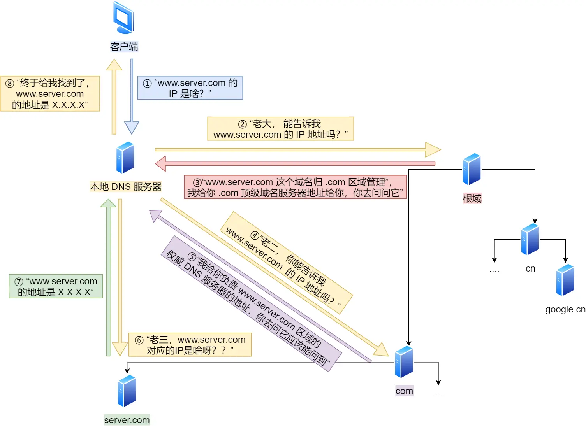
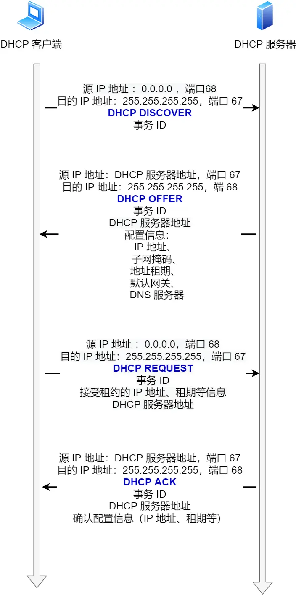
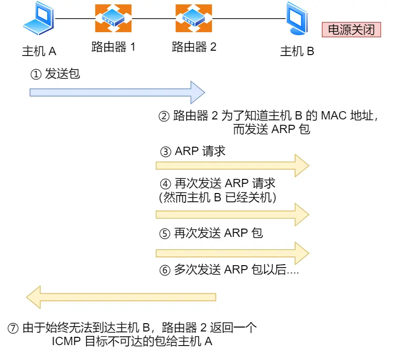
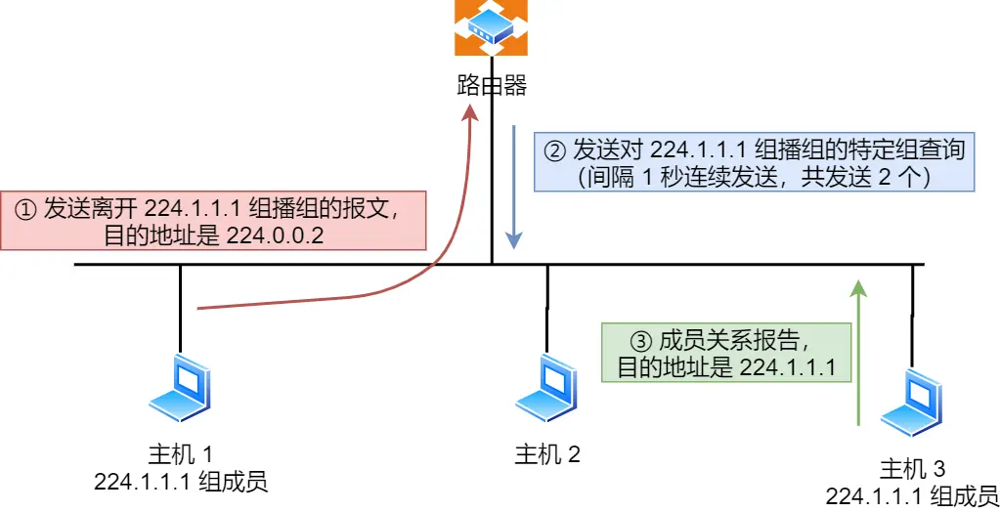

IP基础认识
一、IP基础认识
认识IP
IP在TCP/IP参考模型处于第三层，也叫网络层。
网络层的主要作用是：实现主机与主机之间的通信，也叫点对点（end to end）通信。
网络层与数据链路层有什么关系呢？
IP属于网络层和MAC属于数据链路层之间的区别和关系。
很容易区分，IP的主要作用就是本机之间的通信用的，而MAC的作用就是实现直连的两个设备之间的通信传输。
举个例子说明，小明要去一个很远的地方旅游，指定了一个形成表，中间需要先做飞机、地铁、公交车才能地道目的地，为此小明需要买飞机，地铁票等。
飞机票和地铁票都是去特定的地点的，每张票只能够在某一个限定区间内移动，此处的区间内就是网络中的数据链路。
在区间内移动就相当于数据链路层，充当区间内的两个节点传输的功能，区间内的出发点好比源MAC地址，目标地点好比目的MAC地址。
整个旅游行程表就相当于网络层，充当远程定位的功能，形成的开始好比源IP，形成的重点好比目的IP。
如果小明只有行程表没有车票，就无法达成工具到达目的地，相反，如果除了车票而没有行程表，恐怕也无法到达目的。因为小明不知道该做什么车，也不知道该在哪里换乘。
因此，只有两者兼备，即有某个区间的车票又有整个旅行的行程表，才能保证到达目的地。于此类似，计算机网络中也需要数据链路层和网络层这个分层才能实现向最终目的地的通信。
还有一个重点，履行途中虽然不断变化交通工具，到那时履行形成的其实地址和目的地址是没有变化的。
其实，在网络中数据包传输中也是如此，源IP地址和目标IP地址在传输过程中是不会变化的（前提：没有使用NAT网络），只有源MAC地址和目标MAC一直变化。
IP地址基础知识
在TCP/IP网络通信时，为了保证能正常通信，每个设备都需要配置正确的IP地址，否则无法实现正常的通信。
IP地址（IPv4地址）由32位正整数来表示，IP地址在计算机时以二进制的方式来处理的。为了方便记忆，采用十进制标记的方式，也就是将32位IP地址以每8位为一组，分为4组每组使用.隔开，在将每组转换成十进制。

那么IP地址最大值就是
实际上。IP地址并不是根据主机台数来配置的，而是以网卡。向服务器、路由器灯设备都是2个以上的网卡，也就是其他门会以2个以上的IP地址。
因此，让43亿台计算机全部联网是不可能的，更何况IP地址是由网络标记和主机标记着两部分组成的，所以实际能够连接到网络的计算机个数更少了很多。
现在不仅电脑配置了IP地址，手机、IPad等电子设备也都配置了IP呀，赵艳丽来说肯定会超过43亿，那怎么能支持这么多的IP呢？
因为会根据一种更换IP的地址技术NAT，是的计算数量超过43亿台。
IP地址的分类
互联网诞生起，IP地址显得非常充裕，将IP设计了分类地址：
IP地址分类成了5种类型，分别是A类、B类、C类、D类、E类。

A、B、C类
A类、B类、C类地址？
其中对于A、B、C类主要分为两个部分，分别是网络号和主机号。很好理解，比如A小区1栋101号、B小区1栋101号。
我们可以用下面这个表格来清除的知道A、B、C类对应的地址范围、最大主机个数。
A、B、C分类最大的主机个数是如何计算的呢？
最大主机个数就是卡主机号的位数，比如C类地址的主机号站8位，那么C类最大主机个数就是
。为啥要减2呢？ 因为IP地址中有2个IP是特殊的，分别是主机号全1和全0的地址。
主机号全1：指定某个网络下的所有的主机，用于广播。
主机号全0：指定某个网络。

广播
广播地址用来干啥？
广播地址用来在同一个链路中相互连接的主机之间发送数据包。比如，学校通过广播来上课、下课铃声。
当主机号全1时，就表示该网络的广播地址。比如把172.20.0.0/16（用二进制表示如下）：
10101100.00010100.00000000.00000000将这个地址的主机部分全部都改成1，则形成了广播地址： 10101100.00010100.11111111.11111111，在将这个地址用十进制表示就是172.20.255.255。
广播地址可以分为本地广播和直接广播两种：
在本网络内广播叫做本地广播：比如网络地址为192.168.0.0/24的情况下，广播地址是192.168.0.255。因为这个广播地址的Ip包会被路由器给屏蔽掉，所以不会到达192.168.0.0/24以外的其他链路上。
在不同网络之间的广播叫做直接广播：比如网络地址192.168l.0.0/24的主机向192.168.1.255/24的目标地址发送IP包。收到这个包的路由器将数据转发给192.168.1.0/24，从而是的所有192.168.1.1~192.168.1.254的主机都能收到这个包（由于直接广播有一定的安全问题，多数情况下会在路由器上设置为不转发）。
D、E类
D类、E类地址：D类和E类地址没有主机号，所以不可用于主机IP，D类常用于多播，E类是预留的分类在那时未使用。

多播
多播： 多播就似乎将包发送给特定组内的所有主机。
举例子说明，老师说：“最后一排的同学，上来做到数学题。”老师指定的最后一排的同学也就是多播的含义了。
由于广播无法穿透路由，如果线稿给其他的网段发送同样的额包，就可以使用穿透路由的多播。
多播使用的是D类地址，前4为就是
1110表示就是多播的地址，剩下的28位是多播的组播号。从244.0.0.0 ~ 239.255.255.255都是多播的可用范围，划分为一下三类：
244.0.0.0 ~ 244.0.0.255：为预留的组播地址，只能在局域网中，路由器是不会进行转发的。
244.0.1.0 ~ 238.255.255.255：为用户可用的组播地址。可以用于Internet上。
239.0.0.0 ~ 239.255.255.255为本地管理组播地址，可供内核网络使用，近在特定的本地范围内有效。
IP分类优缺点
优点
不管是路由器还是主机解析到的一个IP地址的时候，我们判断IP地址首位是否为0，0表示A类地址，那么就很快找到网络地址和主机地址。
区域分类判断方式如下图所示：
所以，这种分类比较简单、选路（基于网络地址）简单。
IP分类的缺点
同一网络下没有地址层次，比如一个公司里用了B类地址，但是可能需要根据生产环境、测试环境、开发环境来划分地址层次，而这种IP分类没有地址层次划分的功能，所以这就缺少地址的灵活性。
A、B、C类不能很好的与现实网络匹配。
C类地址包含的最大主机数量实在太少，只有254个，估计一个网吧都不够用。
B类地址可能包含最大主机数又太多了，6w多台放在一个网络下，一般企业都打不到这个规模，闲置的地址等于浪费。
基于以上两个缺点都可以在CIDR五分类地址中解决。
五分类地址CIDR
正因为IP分类存在很多缺点，所以后面使用了五分类地址的方案，即CIDR。
这种方式不再有分类地址的概念，32bit的IP地址被划分成2个部分，前面是网络号，后面是主机号。
划分网络号和主机号
表示形式a.b.c.d/x其中/x不鸟是x位属于网络号，x的范围是0~32，这就是的IP地址更加具有灵活性。
比如10.100.122.2/24这种地址表示的就是CIDR，/24表示前24位是网络号，剩余8位是主机号。
还有另一种划分网络号与主机号形式，那就是子网掩码，掩码的意思就是掩盖掉主机号，剩余的就是网络号。
将子网掩码和IP地址按位计算 与，就可以得到网络号。

为什么要分离网络号和主机号？
因为两台计算机要通讯，首先要判断是会否处于同一个广播域内，即网络地址是否相同，表明接收方在本网络上，那么可以把数据包直接发送到目标主机。
路由器寻址工作中，也就是通过这样的方式来找到对应的网络号，进而数据包转发给对应的网络内。

怎么进行子网划分？
我们可以通过子网掩码划分出网络号和主机号，那实际上子网掩码还有一个作用就是划分子网。
子网划分实际上是将主机地址划分为两个部分：子网网络地址和子网主机地址。形式如下：
未做子网划分的ip地址：网络地址 + 主机地址。
做子网划分后的ip地址：网络地址 + （子网网络地址 + 子网主机地址）。
假设对C类地址进行子网划分，网络地址192.168.1.0，使用子网掩码255.255.255.192对其进行子网划分。
C类地址中前24位是网络号，最后8为是主机号，根据子网掩码可知从8位主机号中借用2位作为子网号。
由于子网网络地址被划分成2位，那么子网地址就有4个，分别是00、01、10、11具体划分如下图所示：
划分后的4个子网如下表格：

公有IP和私有IP
在A、B、C分类地址，实际上有分够用IP地址和私有IP地址。

平时我们在办公室、家里、学校用的IP地址都是私有IP地址，因为这些地址允许组织内部的IT人员自己管理、自己分配，而且可以重复。因此，某个私有IP地址和学校的可以是一样的。
就像我们每个小区都有自己的楼编号和门牌号，你家小区可以交1栋101号，我家也可以叫1栋101号，没有任何问题，但是一旦出了小区，就需要带上小区的地址黄河路0号（公网IP地址），是国家统一分配的，不能两个小区都叫一样的地址。
所以公有IP地址是一个由组织统一分配的，假设要开一个博客网站，就需要去申请买一个公有IP，这样别人才能进行访问，并且公有IP地址基本上再整个互联网范围保持唯一的。
公有IP是由谁管理呢？
公有IP一般由ICANN组织管理，中文叫互联网明层与数字地址分配机构。IANA是ICANN的其中一个机构，它负责分配互联IP地址，是按州的方式层层分配。
ARIN：北美地区。
LACNIC：拉丁美洲和一些加勒比群岛。
RIPE NCC：欧洲、中东和中亚。
AfriNIC：非洲地区。
APNIC：亚太地区。
其中，在中国式由CNNIC的机构进行管理的，它是中国国内唯一指定的全局IP地址管理的组织。
IP地址与路由控制
IP地址的网络地址这一部分是用于进行路由控制的。
路由控制表中记录者网络地址与下一步应该发送至路由器的地址。在主机和路由器上都会有各自的路由控制表。
在发送IP包时，首先要确定包首部中的目标地址，再从路由控制表中找到与该地址具有相同网络地址的记录，根据该记录将IP包转发给相应的下一个路由器。如果路由控制表中存在多条相同网络地址的记录，就选择相同位数最多的网络地址，也就是最长匹配。
举个例子说明:
主机A要发送一个IP包，源地址为10.1.1.0/24和目标地址是10.1.2.10，由于主机A的路由表没有找到与目标地址相同的网络地址于是包就被转发到默认路由（路由器1）。
路由器1收到IP包后，也在路由器1的路由表中进行匹配目标地址，发现匹配到了，于是就把IP数据报转发哦给了10.1.0.2这台路由器2。
路由器2收到后，同样对比自身的路由表，发现匹配到了，于是把IP包仓路由器2 10.1.2.1这个接口发出去，最终经过交换机把IP数据报转发给了目标主机。
环回地址是不会流向网络的。
环回地址就是同一台计算机上的程序之间进行网络通信时所使用的一个默认地址。
计算机使用伊特特殊的IP地址127.0.0.1作为环回地址，与该地址具有相同意义的一个叫做localhost的主机名，使用这个IP或主机名的时候数据包是不会流向网络的。
IP分片与重组
每种数据链路的最大传输单元MTU都是不同的，如FDDI数据李娜路MTU 4352、以太网的MTU是15000字节等。
每种数据链路的MTU之所以不同，是因为每个不同类型的数据链路的使用目的不同。最常见的数据链路是以太网，它的MTU是1500字节。那么当IP数据包大于MTU时IP数据报就会被分片。
经过分片之后的IP数据报在被重组的时候，只能由目标主机进行，路由器是不会进行重组的。
举例子来说明，假设发送方要发送一个4000字节的大数据包，如果要传输在以太网的链路中，则需要把数据包分成3个小的数据包进行传输，再次交给双方重组成大的数据包。
在分片传输中，一旦某个分片丢失了，则会造成整个IP数据包作废，所以TCP引入了MSS也就是TCP层进行分片不由IP层分片，那么对于UDP来说我们尽量不要发送一个大于MTU的数据报文。
二、IPv6基本认识
IPv4的地址是32位，大约可以提供42亿个地址，但是在2011年Ipv4地址已经被分配完了。所以出现了IPv6地址。
IPv6地址是128位，这可分配的地址数量就大的惊人，一个段子说的是IPv6可以保证低矮额上每粒沙子都能被分配到一个IP地址。
IPv6不仅有更多的地址外，还有更好的安全性和扩展性，说简单点儿就是说IPv6相比IPv4能带来更高的网络体验。
但是因为IPv4和IPv6不能相互兼容，所以不但哟啊我们电脑、手机之类的设备支持，还需要网络运营商队现有的设备进行升级，所以可能是IPv6普及率更慢的一个原因。
IPv6新特性
IPv6可自动配置，即使没有DHCP服务器也可以实现自动分配IP地址，真实便捷到即插即用。
IPv6包头 首部采用固定值40字节，去掉了包头校验和，简化了首部结构，减轻了路由器的负担，大大提升高了传输的性能。
IPv6有应对伪造IP地址的网络安全功能以及防止线路窃听的功能，大大提升了安全性。
IPv6地址的标识方法
IPv4地址总长度为32位，每8为作为一组，并用电分十进制的标识方法。
IPv6地址总长度为128位，是以16位作为一组，每组用冒号【:】隔开。

如果出现连续的0时还可以将这些0进行省略，并用两个冒号【::】隔开，但是，一个IP地址只允许出现一次两个连续的冒号。

IPv6地址的结构
IPv6类似于IPv4也是通过IP地址的前几位表示IP地址的种类。
IPv6的地址主要有以下类型的地址：
单播地址：用于一对一的通信。
组播地址：用于一对多的通信。
任播地址：用于通信最近的节点，最近的节点有路由协议决定。
没有广播。
IPv6单播地址类型
对于一对一通信的IPv6地址，主要划分了三类单播地址，每类地址的有效范围都是不同的。
在同一链路单播通信，不经过路由器，可以使用链路本地单播地址。IPv4没有此类型。
在内网单播通信，可以使用唯一本地地址，相当于IPv4的私有IP。
在互联网通信，可以使用全局单播地址，相当于IPv4的公有IP。
IPv4首部和IPv6首部
IPv4首部和IPv6首部差异如下图所示：

IPv6相比IPv4的首部改进：
取消了首部校验和字段：因为在数据链路层和传输层都会校验，因此IPv6直接取消了IP的校验。
取消了分片/重新组装相关字段：分片与充足时耗时的过程，IPv6不允许在中间路由器进行分片与重组，这将大大提高了路由器转发速度。
取消选项字段：选项字段不在是IP首部的一部分了，但它并没有消失，而是可能出现在IPv6首部的下一个首部指出的位置上，删除该选项的字段使得IPv6的首部称为固定长度的40字节。
三、IP协议
跟IP协议相关的技术也不少，说下IP协议相关的重要切常见的技术。
DNS域名解析。
ARP与RARP协议。
DHCP动态获取IP地址。
NAT网络转换。
ICMP互联网控制报文协议。
IGMP因特网组管理协议。
DNS域名解析
在上网的时候，通常使用的方式就是域名，而不是IP地址，因为域名方便记忆。那么实现这一技术的就是DNS解析，DNS可以将域名网址自动转换为具体的IP地址。
域名层级关系
DNS中的域名是用逗号分割的，比如 www.server.com 这里的句点代表的就死不同层次之间的界限。
在域名中，越靠右层级就越高。
根域是最顶层的，它的西一层就是com顶级渔民个，在下面是server.com。
所以域名的层级关系类似于一个树状结构：
根DNS服务器。
顶级域DNS服务（com）。
权威DNS服务器（server.com）。

根域的DNS服务器信息保存在互联网中所有的DNS服务器中。这样以来，任何DNS服务器都可以找到并访问根域DNS服务器了。
因此，客户端只要能够找到任意一台DNS服务器，就可以通过它找到根域DNS服务器，然后再一路顺藤摸瓜找到下层的某台目标DNS服务器。
域名解析流程
浏览器首先看一下自己的缓存里有没有，没有的话向操作系统的缓存要，还没有就得检查本机域名解析文件hosts，如果还没有，就会DNS服务器进行查询，查询的过程如下：
客户端首先发出一个DNS请求，问wwww.server.com的IP是啥嘞，并发给本地DNS服务器（也就是客户端ICP/IP设置中填写的DNS服务器地址）。
本地域名服务器收到客户端的请求后，如果缓存表格里边有www.server.com，则直接返回IP地址，如果没有，本地DNS会去访问它的根域名服务器：”老大，能高速我 wwww.server.comIP地址吗？“根域名服务器是最高层次的，不能直接用于域名解析，但是可以指条明路。
根域名DNS服务器收到来自本地DNS的请求后，发现后置是.com，他就说：”wwww.server.com这个域名贵.com区域管理，我给你.com顶级域名服务器的地址，你去问他把“。
本地DNS收到顶级域名服务器的地址后，发起请求问：”老二，告诉我www.server.com的IP地址是啥嘞？“。
顶级域名服务器就说：”我给你负责www.server.com区域的权威DNS服务器的地址，你去问他应该能闻到“。
本地DNS于是就问了权威DNS服务器：”老三，告诉我www.server.con的IP是啥嘞？“server.com的权威DNS服务器就会进行域名解析。
查询出来对应的IP地址就会告诉本地DNS。
本地DNS拿到IP地址后返回给客户端，客户端和目标就会建立连接了。

DNS域名解析的过程还是很有意思的，整个过程就和我们日常找人问路的过程类似，只指路不带路。
ARP
ARP协议
在传输一个IP数据报的时候，确定了源IP地址和目标IP地址后，就会通过主机路由表确定IP数据包下一跳。然而，网络层的下一层是数据链路层，所以我们还要知道下一跳的MAC地址。
由于主机的路由表中可以找到下一跳的IP地址，所以可以通过ARP协议，求得下一跳的MAC地址。
ARP又是如何知道对方MAC地址的呢？
简单的说，ARP解除ARP请求与ARP响应两种类型的包确定MAC地址的。

主机会通过广播发送ARP请求，这个包中包含了想要知道的MAC地址的主机IP地址。
当同个链路中的所有设备收到ARP请求后，会去拆开ARP请求包中的内容，如果ARP请求包中的目标IP地址与自己的IP地址一致，那么这个设备将自己的MAC地址塞入到ARP响应包返回给主机。
操作系统通常会把第一次通过ARP获取的MAC地址缓存起来，以便下次直接从缓存中找到对应的MAC地址。
不过，MAC地址的缓存是由一定期限的，超过这个期限，缓存的内容就会被清除掉。
RARP协议
ARP协议是已经知道了IP地址来求MAC地址，RARP协议是已经知道了MAC地址来求IP地址。
通常需要架设一台RARP服务器，在这个服务器上注册设备的MAC地址机器IP地址。然后再将这个设备接入到网络，接着：
该设备发送一条【我的MAC地址是xxx，请告诉我我的IP地址是啥？】的请求信息。
RARP服务器收到这个消息之后返回【MAC地址为xxx的设备，IP地址为xxxx】的信息给这个设备。
最后，设备就根据RARP服务器所收到的应答信息设置自己的IP地址。
DHCP
DHCP在生活中我们是常见的，通过通过DHCP来动态获取daoIP地址，大大省去了配IP信息繁琐的过程。
接下来，我们来看看电脑是如何通过DHCP来获取到IP的：

先说明一点儿，DHCP客户端进程监听是68端口号，DHCP服务端进=进程监听是67端口号。
客户端首先发起DHCP发现报文（DHCP DISCOVER）的IP数据报，由于客户端没有IP地址，也不知道DHCP服务器的地址，所以使用的是UDP广播通信，其使用的广播目的地址是255.255.255.255端口是67，并且使用0.0.0.0（端口68）作为源IP地址。DHCP客户端将该IP数据报传递给数据链路层，链路层将该帧广播到所有网络中的设备。
DHCP服务器收到DHCP发现报文时，用DHCP提供报文（DHCP OFFER）向客户端做出响应，该报文仍然使用IP广播地址255.255.255.255报文信息携带服务器提供可租约的IP地址、子网掩码、默认外网管、DNS服务器以及IP地址租用期。
客户端收到一个或多个服务器的DHCP提供报文后，从中选择一个服务器，并向选中的服务器发送DHCP请求报文（DHCP REQUEST进行相应，回显配置的参数）。
最后，服务端用DHCP ACK报文对DHCP请求报文进行相应，应答所要求的参数。
用的是广播，那如果DHCP服务器和客户端不是在同一个局域网内，路由器又不会转发广播包，那不是每个网络都要配置一个DHCP服务器了？
所以，为了解决这个问题，就出现了DHCP中继代理。有了DHCP中继代理以后，对不同网段的IP地址分配也可以由一个DHCP服务器统一进行管理。
DHCP客户端会向DHCP中继代理发送DHCP请求包，而DHCP中继代理在收到这个广播包以后，再以单播的形式发给DHCP服务器。
服务器段收到该包以后再向DHCP中继代理返回应答，并由DHCP中继代理将此包广播给DHCP客户端。
因此，DHCP服务器及时不在同一个链路上也可以实现统一分配和管理IP地址。
NAT
IPv4的地址非常的紧缺，在前面我们也提到了可以通过无分类的地址来减缓IPv4地址耗尽的速度，但是互联网的用户增速是非常惊人的，所以IPv4地址依然有被耗尽的危险。
于是，提出了一种网络地址转换NAT的方法，再次环节了IPv4地址耗尽的问题。
简单来说，NAT就如同一个公司内的主机队外通信时，把所有的IP地址转换成公有IP地址。
那不是N个私有IP地址，你就要有N个公有IP地址吗？没有缓解呀？
确实，普通的NAT转换没什么意思，绝对多数的网络应用都是使用的传输层TCP或UDP来传输数据的。因此可以把IP地址 + 端口号一起进行转换。这样，就用一个全球IP地址就可以了，这种转换技术叫网络地址与端口转换NAPT。
网络地址与端口转换NATP就是将IP+端口一起进行转换。
如上图中，有两个客户端192.168.1.10和192.168.1.11同时与服务器183.232.231.172进行通信，并且这链各个客户端的本地端口都是1025。
此时，两个私有IP地址都转换IP地址为公有地址120.229.175.121，但是以不同的额端口号进行区分。
于是，生成一个NAPT路由器的转换表，就可以正确的转换地址跟端口的组合，令客户端A、B能同时与服务器之间进行通信。
这种转换表在NAT路由器上自动生成。比如，在TCP情况下，建立TCP连接首次握手时的SYN包一经发出，就会生成这个表。而后又随着收到的关闭连接时发出FIN包的确认应答从表中被删除。
NAT缺点：
外部无法主动与NAT内部服务器建立连接，因为NAPT转换表中没有转换记录。
转换表的生成与转换操作都会产生性能开销。
通信过程中，如果NAT路由器重启了，所有TCP链接都会被重置（单点问题）。
解决NAT潜在问题：
使用IPv6：IPv6可用范围非常大，以至于每台设备都可以配置一个公有IP地址。
NAT穿透技术：NAT穿透技术拥有这样的功能，它能够让网络应用程序主动发现自己位于NAT设备之后并且会主动获得NAT设备的公有IP，并为自己建立端口映射条目，注意这些都是NAT设备的应用程序自动完成的。
也就是说，在NAT穿透技术中，NAT设备的应用程序处于主动地位，它已经明确的知道NAT设备要修改它外发的数据包，于是就主动配合NAT设备的操作，主动建立映射，这样就不像以前由NAT设备来建立映射了。
ICMP
ICMP 全称 Inernet Control Message Protocol互联网控制报文协议。
控制指的是在网络包在复杂的网络传输环境中，会遇到各种问题，因此需要传出消息来报告遇到什么问题，来控制整个局面。
ICM功能：
确认IP包是否成功送达目标地址。
报告发送过程中IP包被废弃的原因和改善网络设置等。
介绍
在IP通信中如果某个IP包因为某种原因未能达到目标地址，那么这个具体的原因将由ICMP负责通知。

如上图所示，主机A向主机B发送了数据包，由于某种原因，图中的额路由器2未能发现主机B的存在，这时，路由器2就会向主机A发送一个IMCP目标不可达的数据包，说明发往主机B的包未能成功。
ICMP的这种通知消息会使用IP进行发送。
因此，从路由器2返回的ICMP包会按照往常的留有控制先经过路由器1再转发给主机A。收到该ICMP包的主机A则分解ICMP的首部和数据域以后得知具体的发生问题的原因。
ICMP类型（一般分为两大类）
一类是用语诊断的查询消息，也就是查询报文类型。
另一类是通过出错原因的错误消息，也就是差错报文类型。

IGMP
ICMP跟IGMP是一点儿关系都没有，就好像雷锋和雷峰塔是完全不一样的 。
在前面我们知道了组播地址，也就是D类地址，既然是组播，那就说明是只有一组的主机能收到数据包，不在一组的主机不能收到数据包，那么管理是否在一组呢？就需要IGMP协议了。

IGMP是因特网组管理协议，工作在主机（组播成员）和最后一跳路由之间，如上图中的蓝色部分。
IGMP报文向路由器申请加入和退出组播组，默认情况下路由器是不会转发组播包到连接中的主机，除非主机通过IGMP加入到组播组，主机申请加入到组播组时，路由器就会记录IGMP路由器表，路由器后续就会转发组播包到对应的主机了。
IGMP报文采用IP封装，IP头部的协议号为2，而且TTL字段通常为1，因为IGMP是工作在主机与连接的路由器之间。
IGMP工作机制：IGMP分为三个版本，IGMPv1、IGMPv2、IGMPv3。以IGMPv2为例，说下查询与响应离开组播组这两个工作机制。
常规查询与响应工作机制

路由器会周期性的发送目的地址为224.0.0.1表示同一网段内所有主机和路由器IGMP常规查询报文。
主机1和主机3收到这个查询，随后会启动报文延迟计时器，计时器的时间是随机的，通常是0~10秒，即使器超时后主机就会发送IGMP成员关系报文（源IP地址为自己主机的IP地址，目的IP地址为组播地址）。
如果在定时器超时之前，收到同一个组内的其他主机发送的成员关系报文报文，则自己不在发送，这样可以减少网络中多余的IGMP报文数量。
路由器收到主机的成员关系报文后，就会在IGMP路由表中加入该组播组，后续网络中一旦该组播地址数据到达路由器后，它会把数据包转发出去。
离开组播组工作机制
离开组播组的情况1：网络断仍有该组播组：

主机1要离开组224.1.1.1，发送IGMPv2路组报文，报文的目的地址是224.0.0.2（表示发向网段内的所有路由器）。
路由器收到该报文后，以1秒为间隔连续发送IGMP特定组查询报文（共计发送2个），以便确认该网络是否还有224.1.1.1组的其他成员。
主机3仍然是由224.1.1.1的成员，因此它立即响应这个特定组查询。路由器知道该网络中任然存在该组播组的成员，于是继续向该网络转发224.1.1.1的组播数据包。
离开组播组的情况2：网段中没有该组播组。
主机1要离开组播组224.1.1.1，发送IGMP离组报文。
路由器收到该报文后，以1秒为间隔连续发送IGMP特定组查询报文（共计发送2个）。此时在该网段内，组播224.1.1.1已经没有其他成员了，因此没有主机响应这个查询。
一定时间后，路由器认为该网段中已经没有224.1.1.1组播组成员了，将不会在向这个哇果断转发该组播地址的数据包。